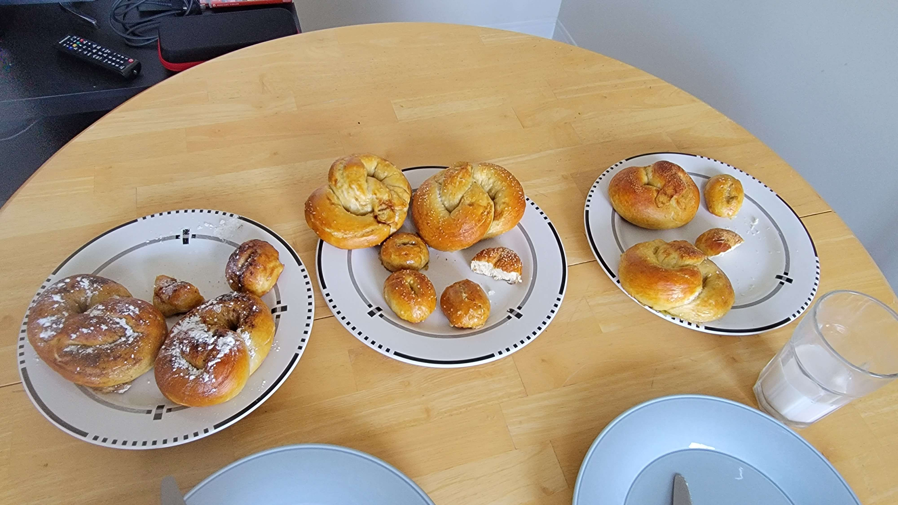

Conceived Saturday, July 15, 2023 - 11:41 AM
Amount of food created: 8 pretzels or so
Costs: Depends a lot on lye price, not calculated
In the original edition of this cookbook, the text here was just an explitive telling you to be serious about the lye. However, I do want to be slightly more professional here. So, just keep in mind that these pretzels are delicious, but require a focused mind. Perhaps attempt meditation beforehand, and avoid watching youtube videos on you phone while making this. It's not worth it.
Here's a picture of how the space might look for lye protection
1. Preheat the oven to 400 degrees, line a few baking sheets you have with parchment paper. Once your gloves have lye on them you want the transfer to be easy! Just a reminder that we're not messing around
2. Add the yeast (1tbsp/1pkt), the brown sugar (1tbsp), and 1/4 cup of water. Whisk and let sit for 5 minutes or until it begins frothing.
3. Add the remaining water(1 1/4 cups), the flour (5 cups) the salt (3/4 tsp) and really get in there with your hands and knead it for about ten minutes. If the dough doesn't form, just add more flour. I'm not a purist on dough, just on not suffering lye burns
4. Fun fact, this dough doesn't need to rise. Bet you're glad you started preheating the oven earlier, eh?
5. Transfer the dough to a non-floured work surface (Another twist!), and divide it into ten equal pieces. This can be done by eye or by rolling it into a sheet and then cutting with kitchen shears.
6. 5.Roll the remaining dough into round about 24 inch logs.
7. At this point, I'd usually slap it on a sandwich with toasted bread and lettuce (because all my recipes end up as a sandwich, a soup, or a salad) If not, crackers!
WARNING: Hi, it's me again. This is another quick reminder to be careful.
1. Place a thick towel on a surface with plenty of room, place a large stainless steel pot well into the sheet. On one side place your baking sheets that contain the pretzel dough and then lay down parchment paper equal to the dimensions of your baking sheets as close as you can to the pot. Prepare a cup of vinegar nearby in case of emergency.
2. Add Ten cups of water carefully into the pot, and prepare an area nearby for any utensils you will use in this process. Since you're not from the future I'll tell you to get a pair of silicone tongs and a silicone spatula.
3. Apply your nitrile gloves and goggles. Check to make sure all of your skin below your neck is covered
4. Grab your PLASTIC measuring cup and carefully pour a half cup of lye above the pot. Don't worry if it's slightly under, less lye is better than burning yourself
5. Carefully pour the lye into the pot, potential splashes will harm you! Use a silicone spatula to sir the lye to dissolve, it is dissolved when it appears clear.
6. Use the tongs to carefully dip each of the pretzels in the lye, and hold it under for 30 seconds. Afterwards, hold it slightly above the bath for fifteen more seconds to let it drip off any excess lye. Remember not to put the tongs anywhere but on parchment paper as this will cause them to damage your surface. Then, transfer your pretzels to the clean baking sheet covered with greased parchment paper.
7. Once you are done, clear the sink, and carefully pour the mixture down the drain. You may pour part of the cup of vinegar down afterwards if you wish, but keep some around just in case.
8. Whisk an egg in a bowl, and use a brush to apply the egg bath to the pretzels. Then, pour salt or other desired flavorings over them.
1. Bake pretzels in the oven for 10-13 minutes
2. Remove from oven, wait 5 minutes before peeling away from paper
3. Serve fresh or freeze!